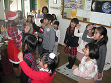

様々なピアノコンクールやピアノ検定試験、学校の合唱コンクールの伴奏など、レベルアップを目指したい人のためのコースもあります。
週２回レッスン、４５分レッスン、６０分レッスンのコースがあります。
ただし、お月謝がその分プラスされます。
＜例＞週２回(中級30分×２回)￥7,000×２
現在は、DIAPASONのグランドピアノ２台でレッスンしています。
また、SERVIANOの電子ピアノも、練習用として設置しています。

年に一回、沖縄市民劇場あしびな～にて発表会があります。 そして、年に一回教室にて、生徒さん同士の交流会で、ミニコンサート(演奏、ゲームなど)もあり、 皆さん楽しみにしています。
外から見た教室です。
大人のためのピアノ教室も人気です。手先を動かすことは脳に刺激を与え、脳を活性化します。
大人の皆さん、さまざまな事情も抱えながらも、 時間をつくって練習し、教室に通っております。